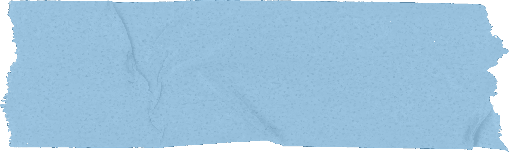
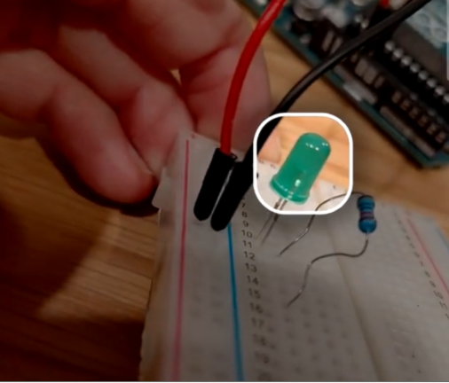
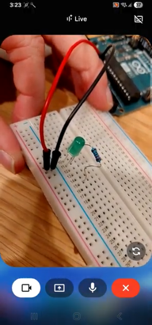
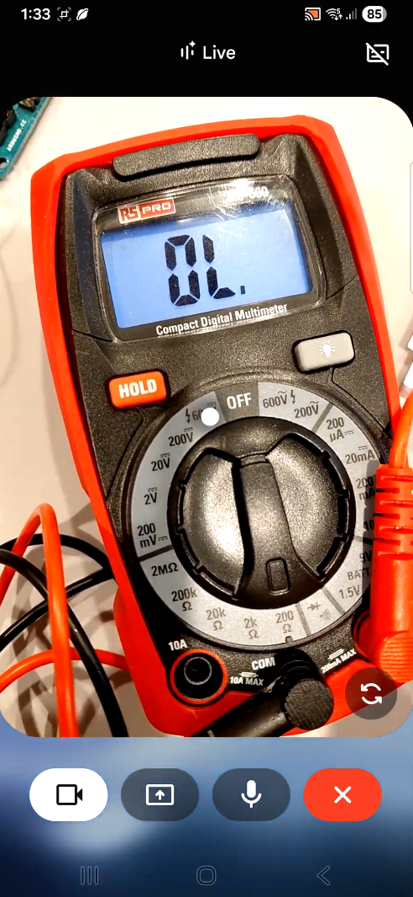
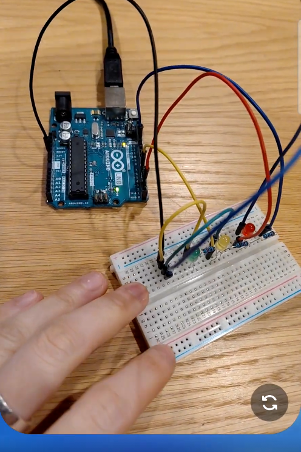
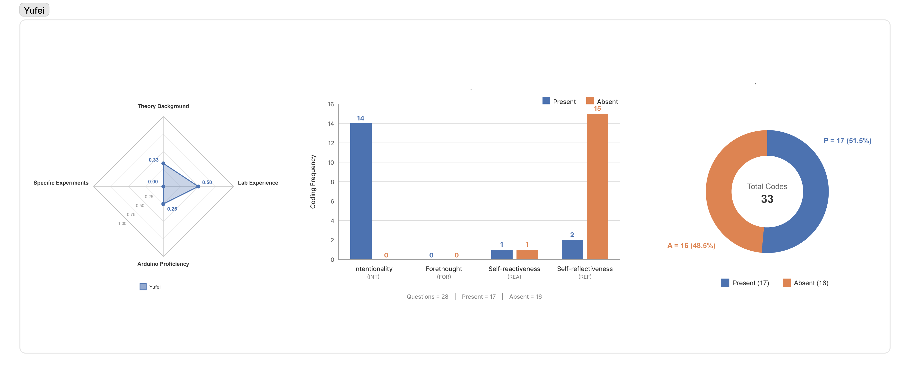
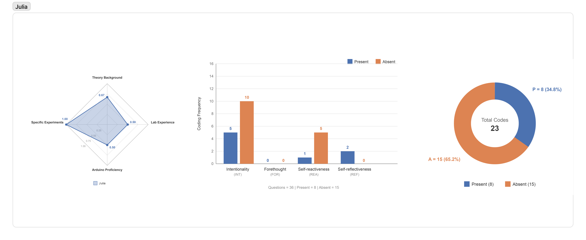
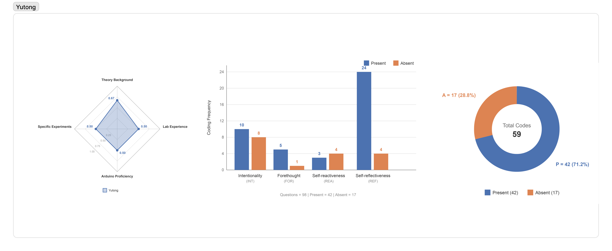

How does multimodal AI implicitly subvert or support student agency in experiential learning, and through what strategies of question formulation can students systematically improve their own agency?
This study combined two analytical approaches to examine learner agency in a multimodal AI supported experimental learning environment. The first approach was bottom-up. Exploratory interviews were used to identify the situations in which participants felt multimodal AI supported or weakened their sense of agency during hands-on tasks. The second approach was top-down. A content analysis of 576 interaction questions was conducted using Bandura's theory of human agency, which identifies intentionality, forethought, self-reactiveness, and self-reflectiveness as core agentic properties (Bandura, 2006). The two approaches were then cross-checked against each other through case level comparison of individual learners, linking quantitative question profiles with the motivations participants described in interviews.
Dual Impact: Multimodal LLMs enhances agency when offering low-pressure hints, conceptual explanations, and cross-modal troubleshooting (text, code, physical circuits). Conversely, it undermines agency through premature interruptions, rigid pacing, and inaccurate yet confident responses.
Core Mechanism: Question formulation serves as the primary hinge of learner control. Rather than being predetermined by prior subject expertise or overarching learning strategies, agency is dynamically enacted through the qualitative precision of learners' questions, marked by high self-reflectiveness (seeking principles) and self-reactiveness (troubleshooting feedback) alongside lower forethought and initial intentionality.



| Dimension | Code | Definition | Example | N |
|---|---|---|---|---|
| Intentionality | INT-P (Present) |
The learner clearly defines goals, provides task context, or constrains the expected AI output. | “How to connect this LED light? Can you give me specific steps and code?”—P03 | 73 |
| INT-A (Absent) |
The learner outsources the goal or next step to AI, using vague prompts without specifying what they want to achieve. | “Help me do this.”—P01 | 90 | |
| Forethought | FOR-P (Present) |
The learner considers risks, consequences, reasonableness, or expected outcomes before acting. | “What if I burn out the bulb?”—P16 | 34 |
| FOR-A (Absent) |
The learner explicitly shows a trial-and-error attitude without considering possible consequences. | “Do I need to take everything apart?”—P08 | 36 | |
| Self- reactiveness |
REA-P (Present) |
The learner responds to AI feedback, error messages, physical feedback, or measurement results by checking, revising, or asking follow-up questions. | “Why must current be measured in series? Is parallel not okay?”—P05 | 79 |
| REA-A (Absent) |
When facing errors or feedback, the learner does not use the feedback to locate or revise the problem, but only asks AI to fix it vaguely. | “Why doesn't it work?”, without specific context—P04 | 28 | |
| Self- reflectiveness |
REF-P (Present) |
The learner asks about concepts, mechanisms, principles, or “why” questions. | “Why must current be measured in series? Is parallel not okay?”—P05 | 176 |
| REF-A (Absent) |
The learner only asks for copyable answers, calculation results, or final code, avoiding conceptual understanding. | “Calculate it for me.”—P16 | 60 |
Learner agency in multimodal AI supported experimental environments is not an intrinsic trait predetermined by prior expertise or general learning strategies, but an interactive practice dynamically governed by the quality of question formulation. While multimodal AI offers powerful cross-modal scaffolding and low-pressure conceptual support, its rapid pacing and overconfident inaccuracies can easily displace learner control if inquiries simply outsource procedural execution. Ultimately, sustaining agency requires students to use deliberate, situated questioning that prioritizes conceptual sensemaking, while future educational AI systems must be designed to scaffold reflection and adaptive pacing rather than merely delivering immediate answers.